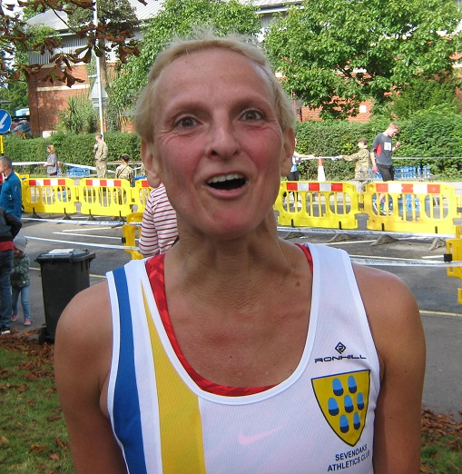

James Graham took the M60 Kent Championship at the Tonbridge Half Marathon on Sunday 2nd October in fine conditions. Jacqui O'Reilly was a brilliant sixth in a field of over 360 women and Sally Shewell

was W55 runner-up with yet another excellent performance on the roads. Keith Dowson led the nineteen-strong Sevenoaks AC contingent home, narrowly ahead of James Graham.
Tonbridge Half expert Grace Manzotti writes:

"A PB today!! i have done all 6 of them since the first one. I just live 5 minutes from so no excuses! I was really worried about this race as it was my first Half Marathon after getting an injury last year and I did run this race last year with an injury, which wasn’t fun and not a good idea at the time. I had not run a half marathon since last October.
"And even though I have been running regularly I felt I hadn’t done enough distance for it. To be honest I was happy to be at the starting line injury free, was good to see all the Sevenoaks AC friends and I started with Lionel and Anna and that helped with my nerves about my hip falling off or something like that!
"It is a hard course, undulating they call it, but I think I found the hills slightly easier than the previous times, maybe it is all the Tuesdays runs in Knole park with the crazy hills there and the handicap races which helped me with the hills. I enjoyed it especially when I realised I was fine and was going to finish it OK! I enjoyed going through Leigh, so much crowd support. The last 4 miles where hard as it is when the hills start again, and the last stretch in Lower Haydsen lasts forever but crossing the finish line was amazing I am still buzzing. Thanks to everybody at Sevenoaks AC for all the encouragement I get all the time!"
The SAC results were:
| Pl. | Bib | Name | Club | Sx | Cat | Net Time | Time | By cat. |
|---|---|---|---|---|---|---|---|---|
| 30. | 905 | Keith DOWSON | Sevenoaks AC | M | M50 | 01:26:22 | 01:26:23 | 6 |
| 32. | 672 | James GRAHAM | Sevenoaks AC | M | M60 | 01:26:21 | 01:26:25 | 1 |
| 34. | 1172 | Andrew MILNE | Sevenoaks AC | M | SM | 01:26:37 | 01:26:42 | 33 |
| 43. | 1100 | Daniel WITT | Sevenoaks AC | M | M40 | 01:27:26 | 01:27:31 | 18 |
| 67. | 360 | John STEVENS | Sevenoaks AC | M | M50 | 01:29:22 | 01:29:27 | 11 |
| 83. | 980 | Nick HUMPHREY-TAYLOR | Sevenoaks AC | M | M40 | 01:29:42 | 01:30:36 | 29 |
| 92. | 1255 | Jacqueline O'REILLY | Sevenoaks AC | F | SW | 01:31:44 | 01:31:48 | 6 |
| 98. | 655 | Joe PARSONS | Sevenoaks AC | M | SM | 01:32:36 | 01:32:40 | 92 |
| 116. | 1112 | Chris DESMOND | Sevenoaks AC | M | M50 | 01:34:19 | 01:34:24 | 21 |
| 235. | 463 | Simon HALLPIKE | Sevenoaks AC | M | M60 | 01:41:51 | 01:42:02 | 10 |
| 311. | 518 | Sarah SHEWELL | Sevenoaks AC | F | W55 | 01:46:00 | 01:46:19 | 2 |
| 387. | 163 | Grazia MANZOTTI | Sevenoaks AC | F | W45 | 01:50:01 | 01:50:47 | 15 |
| 426. | 978 | Anna HUMPHREY-TAYLOR | Sevenoaks AC | F | W45 | 01:52:23 | 01:53:08 | 19 |
| 460. | 681 | Lionel STIELOW | Sevenoaks AC | M | M60 | 01:54:46 | 01:55:33 | 18 |
| 521. | 576 | Jonathan COPPING | Sevenoaks AC | M | M60 | 01:57:22 | 01:58:08 | 21 |
| 673. | 1137 | Clair THORNTON | Sevenoaks AC | F | W35 | 02:07:19 | 02:08:09 | 53 |
| 674. | 1138 | Mike ALLEN | Sevenoaks AC | M | M40 | 02:07:19 | 02:08:10 | 167 |
| 687. | 249 | Robert PEERS | Sevenoaks AC | M | M50 | 02:07:49 | 02:08:52 | 120 |
| 770. | 715 | Sylvia LEWIS | Sevenoaks AC | F | W55 | 02:13:24 | 02:14:55 | 13 |
The full results are here.